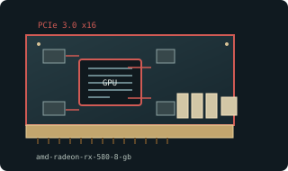

[ MODERN PCI EXPRESS GRAPHICS // IDENTIFIED COMPONENT ]
AMD Radeon RX 580 8 GB
Polaris 20 / GCN 4, 2017. This entry identifies one specific product configuration; closely named models and partner-board variants are distinguished below.

MODEL IDENTIFICATION: 4 GB and 8 GB variants coexist; RX 580 2048SP is a distinct lower-core-count regional product. Partner power plugs, clocks, coolers, and outputs vary.
Recorded specifications
| Cataloged product | AMD Radeon RX 580 8 GB |
|---|---|
| Generation / chip | Polaris 20 / GCN 4, 2017 |
| Core & memory | Polaris 20 XTX; 2304 stream processors; 8 GB GDDR5 on 256-bit bus; 185 W reference typical board power. |
| Host interface & I/O | PCI Express 3.0 x16; reference power design one 8-pin PCIe plug; outputs include DisplayPort, HDMI, and dual-link DVI-D. AIB layouts differ. |
| Variant boundary | 4 GB and 8 GB variants coexist; RX 580 2048SP is a distinct lower-core-count regional product. Partner power plugs, clocks, coolers, and outputs vary. |
| Archive record | Photograph label and PCB revision; record BIOS, driver version, adapters, physical condition, and source-document revision used to verify specimen. |
Compatibility & service notes
Reference 8 GB RX 580 has 2304 stream processors; not RX 580 2048SP or RX 570.
Read GPU ID and memory size, then inspect PCB label: modified mining BIOS is common. Restore only a verified matching BIOS; inspect fans and VRM/memory cooling before load.
- Check slot signaling, keying, lane width, auxiliary power, clearance, and PSU requirements; physical insertion alone does not prove compatibility.
- Use drivers supporting this device ID and OS release. Preserve original driver/firmware before updates and record source.
- Do not energize cards with cracks, corrosion, damaged power sockets, obstructed fans, or suspected shorts; inspect before bench testing.
Manufacturer & standards sources
- AMD Radeon RX 580 product specificationsUse alongside the exact board label and revision; archived family data may not describe every OEM implementation.
- PCI-SIG PCI Express standardsUse alongside the exact board label and revision; archived family data may not describe every OEM implementation.
- Radeon RX 580 specsUse alongside the exact board label and revision; archived family data may not describe every OEM implementation.
Specifications describe the cataloged reference configuration only. Manufacturer manuals and physical product label take precedence for a specific OEM revision.